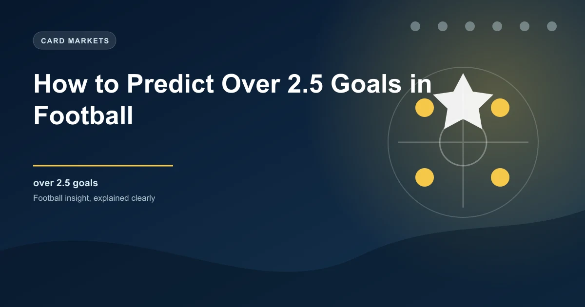

Over 2.5 goals is one of the most popular football betting markets worldwide. It offers a balance between reasonable odds and a probability that rewards research. Unlike picking a match winner, you do not need to decide which team will win. You simply need to predict whether a match will produce three or more goals in total.
But consistently finding value in the Over 2.5 market requires more than guessing. It requires a structured approach to analysing teams, tactics, data, and context. This guide breaks down the key factors that increase the likelihood of Over 2.5 goals landing and shows you how to use them in your betting research.
The starting point for any Over 2.5 analysis is how many goals each team scores on average. Look at goals scored per match across the current season, not just overall totals. A team that has scored 60 goals in 30 matches averages 2.0 goals per game. A team that has scored 60 goals in 38 matches averages 1.58. That difference is massive for Over 2.5 assessment.
Beyond the raw average, look at the distribution. A team that scores exactly 2 goals in most matches is less likely to contribute to Over 2.5 games than a team that alternates between 1 and 3. Variance matters. Teams that blow opponents away in some matches and score 1 in others tend to produce more Over 2.5 results than teams with consistent low scoring.
Key scoring metrics to track include:
Goals are a two-way street. Even the best attacking team will struggle to reach Over 2.5 if their opponent defends like a wall. That is why defensive analysis is just as important as attacking analysis when predicting Over 2.5 goals.
Look at goals conceded per game for both teams in the match. A defence that concedes 1.8 or more goals per game is far more likely to be involved in Over 2.5 matches than one conceding 0.8 per game. When two leaky defences meet, the Over 2.5 probability jumps significantly.
Go deeper than just goals conceded. Examine:
When you combine a team that averages 2.0 goals scored with a defence that concedes 1.5 goals per game, you have a match with a strong Over 2.5 profile.
Historical matchups between two teams can reveal patterns that season averages miss. Some fixtures just produce goals regardless of form or table position. This can be due to tactical mismatches, psychological factors, or stylistic compatibility.
When reviewing head-to-head records, look at the last 10 to 15 meetings. Count how many ended with Over 2.5 goals and calculate the percentage. If 8 out of the last 12 meetings produced three or more goals, that is a 67% Over 2.5 rate — well above the typical market baseline.
Pay attention to whether the Over 2.5 pattern holds across different venues. Some teams produce high-scoring games at home but tighter affairs away. Others consistently deliver goals regardless of venue. The venue pattern can be the tiebreaker when other factors are evenly balanced.
Also look at the average total goals in those head-to-head matches. If the average is 3.4 goals per meeting, that suggests a fixture with a naturally high goal ceiling. If it is 2.1, the fixture tends to produce tighter games even if both teams score freely elsewhere.
Football tactics have a huge impact on goal output. Not all teams play the same way, and understanding tactical approaches helps you identify which matches are most likely to produce goals.
Teams that press high up the pitch create turnovers in dangerous areas. This leads to more chances, more shots, and often more goals. Teams managed by coaches who favour aggressive pressing — such as those inspired by the gegenpressing philosophy — tend to produce more Over 2.5 results because they sacrifice defensive solidity for attacking intensity.
Counter-attacking teams can produce high-scoring games when they face opponents who push forward. The counter-attacking side absorbs pressure and breaks quickly, often creating clear-cut chances. When two counter-attacking teams meet, the game can be cagey. But when a counter-attacking team faces a possession-heavy side, goals often flow at both ends.
Teams that prioritise attack over defence are Over 2.5 goldmines. These teams typically concede plenty of chances but also create a high volume themselves. The resulting end-to-end football produces goals. Identify teams with high shots-on-target numbers and high shots-conceded numbers — they are playing open football that leads to goals.
When a team that plays open, attacking football faces a team that plays a high line, goals become very likely. The attacking team exploits space behind the defence while the high-line team creates its own chances. Conversely, when two deep-defending teams meet, goals become scarce. Understanding the tactical dynamic between the two specific teams in a match is crucial.
Expected Goals (xG) is the most powerful tool available for predicting whether a match will produce Over 2.5 goals. While actual goals can be influenced by luck, finishing quality, and refereeing decisions, xG tells you about the underlying quality of chances being created.
For Over 2.5 prediction, focus on these xG metrics:
If Team A averages 1.8 xG For and Team B averages 1.6 xG For, the combined xG for the match is 3.4. That is well above the 2.5 threshold, suggesting Over 2.5 is likely. However, you also need to consider defensive xG. If both teams have low xG Against numbers, they may suppress each other's chances despite strong attacking outputs.
The best Over 2.5 candidates are matches where both teams have:
Goals in football are not evenly distributed across home and away matches. Many teams score significantly more goals at home than away, while others are more open and vulnerable on the road. Ignoring home and away splits can lead to poor Over 2.5 assessments.
For example, a team might average 2.3 goals per game overall, but break down as 2.8 at home and 1.8 away. If they are playing away in a match you are considering, their realistic goal output is closer to 1.8, not 2.3. That adjustment could move the match from an Over 2.5 candidate to a borderline or Under situation.
Check these splits for both teams:
A match where the home team scores 2.8 goals per game at home and the away team concedes 2.1 goals per game on the road is a strong Over 2.5 setup. The venue advantage amplifies the scoring potential.
Recent form often tells you more than season averages. A team that scored 2 goals per game across the season might have scored 3 or more in each of their last five matches. Alternatively, a high-scoring team might have hit a dry patch and scored just 1 goal in their last three games.
Look at the last 5 to 8 matches for each team and evaluate:
Momentum matters because confidence affects performance. A team on a scoring streak plays with belief, takes more risks, and creates more chances. A team in a goal drought might press harder and leave more space, leading to goals at both ends. Both scenarios can contribute to Over 2.5 outcomes.
Beyond pure statistics, several contextual factors influence whether a match produces goals:
High-stakes matches — cup finals, relegation six-pointers, title deciders — can go either way. Some become tight, cautious affairs. Others explode as teams throw everything forward. Evaluate the specific context rather than assuming one pattern.
Extreme weather suppresses goals. Heavy rain makes the pitch slippery and reduces passing accuracy. Strong winds affect long balls and crosses. Extreme heat leads to slower play and more conservative tactics. Check the weather forecast and be cautious about Over 2.5 picks in poor conditions.
Teams playing three matches in eight days often rotate squads and play at reduced intensity. This can lower the goal output. Fresh teams against tired teams can produce goals, but heavily rotated sides might lack the cohesion to create clear chances.
Some referees are more card-happy and stop the game more frequently. This disrupts rhythm and reduces flowing, goal-producing football. Check the referee appointment and their cards-per-game and fouls-per-game averages.
The best Over 2.5 candidates are matches where two attack-minded teams meet, both have leaky defences, and the head-to-head history supports goals. Avoid matches where one team has a strong defensive record or where tactical conservatism is likely. Value often exists when the bookmaker underestimates goals in matches between mid-table teams with nothing to play for — these teams tend to play open, carefree football.
Even with a solid framework, bettors make predictable errors when looking for Over 2.5 goals. Avoid these pitfalls:
Predicting Over 2.5 goals is a skill that improves with practice and discipline. The key is building a systematic approach that combines statistical data, tactical analysis, and contextual awareness. Do not rely on gut feeling alone. Use xG data, scoring rates, defensive records, head-to-head patterns, and form analysis to build a complete picture of each match.
The most profitable Over 2.5 bettors are not the ones who pick the most bets. They are the ones who pick the right bets — matches where the statistics and analysis strongly support three or more goals, and where the odds offer genuine value.
Check our free daily football predictions to apply these strategies.
Generate optimized accumulator combinations from today's AI-powered predictions. Set your target odds and get instant ticket suggestions.
Free Ticket Builder →